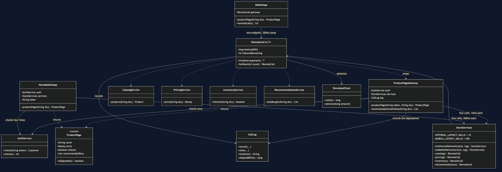
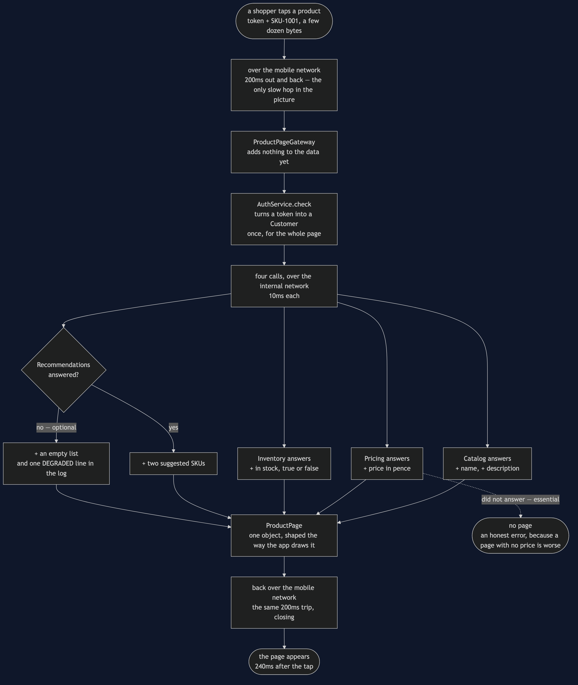
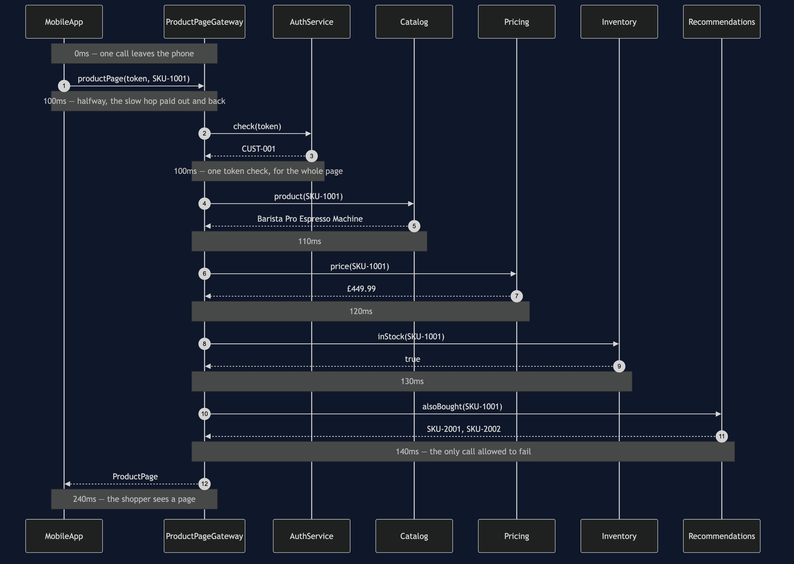
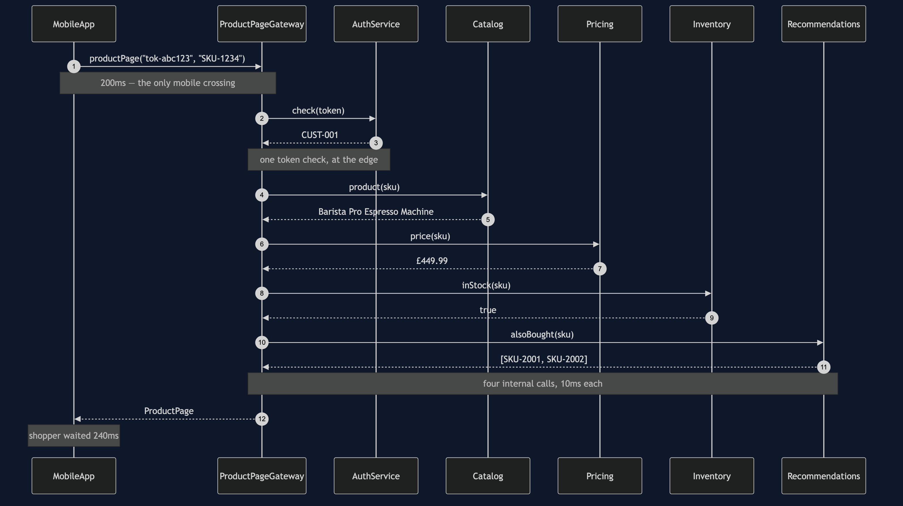
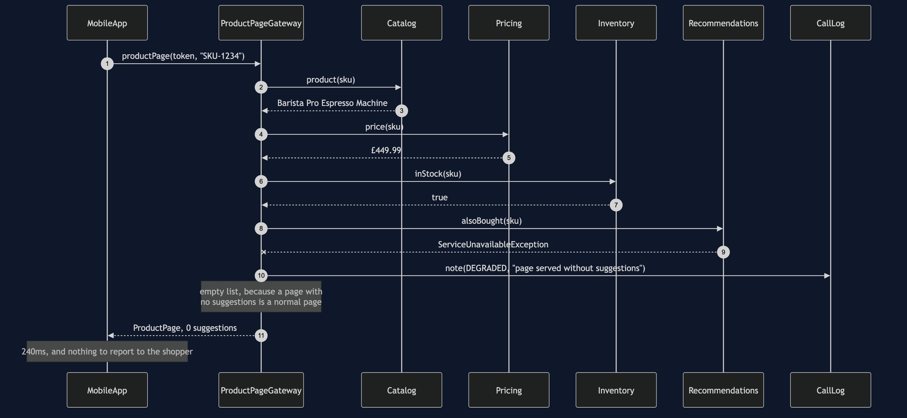
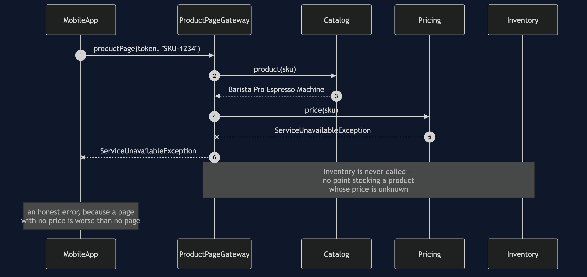
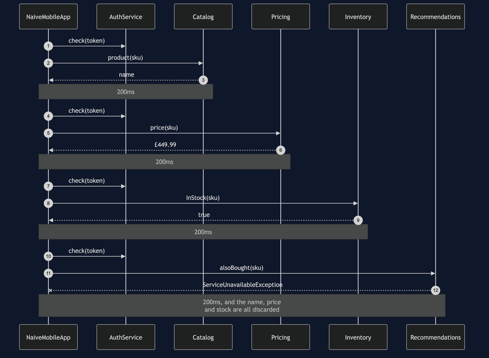

API Gateway Pattern
Put one service in front of all the others, so a client makes a single call instead of five and only has to know one address.
Think of a hotel reception desk. You do not keep separate phone numbers for housekeeping, the restaurant and the concierge; you ring reception, and reception deals with whoever needs dealing with. One number to remember, and it does not change when the hotel reorganises its departments.
The shop's mobile app needs a product page, and that page is made of four services' worth of information: the name from Catalog, the price from Pricing, availability from Inventory, and "customers also bought" from Recommendations. The obvious app calls all four itself. It works. It is also four slow trips instead of one, four token checks instead of one, and — the expensive part — it loses the whole product page on the day a feature nobody would miss goes down.
Run
./gradlew runFour acts. The first two are the same page built two ways:
==================================================================
1. No gateway: the app calls all four services itself
==================================================================
0ms -> 200ms Catalog OK Barista Pro Espresso Machine
200ms -> 400ms Pricing OK £449.99
400ms -> 600ms Inventory OK true
600ms -> 800ms Recommendations OK [SKU-2001, SKU-2002]
page: Barista Pro Espresso Machine £449.99 in stock 2 suggestions
four round trips over the mobile network, 4 token checks, shopper waited 800ms
==================================================================
2. With a gateway: the app makes one call
==================================================================
0ms -> 240ms Gateway OK Barista Pro Espresso Machine £449.99 in...
100ms -> 100ms Gateway AUTH one token check for CUST-001
100ms -> 110ms Catalog OK Barista Pro Espresso Machine
110ms -> 120ms Pricing OK £449.99
120ms -> 130ms Inventory OK true
130ms -> 140ms Recommendations OK [SKU-2001, SKU-2002]
page: Barista Pro Espresso Machine £449.99 in stock 2 suggestions
1 round trip over the mobile network, 1 token check, shopper waited 240msIdentical page. 240 milliseconds against 800, and one token check against four. A phone reaching the data centre takes about 200ms per trip; two services inside it take about 10. The gateway's own call opens the timeline and closes it 240ms later, and the four internal calls all happen inside that trip.
The other two acts are the same failure, twice:
==================================================================
3. Recommendations is down, and there is no gateway
==================================================================
0ms -> 200ms Catalog OK Barista Pro Espresso Machine
200ms -> 400ms Pricing OK £449.99
400ms -> 600ms Inventory OK true
600ms -> 800ms Recommendations FAILED no answer
no page: Recommendations did not answer
the name, the price and the stock all arrived, and were thrown away with the error.
the shopper wanted to know what an espresso machine costs. They cannot find out,
because a feature nobody would miss is unavailable.
==================================================================
4. Recommendations is down, and there is a gateway
==================================================================
0ms -> 240ms Gateway OK Barista Pro Espresso Machine £449.99 in...
100ms -> 100ms Gateway AUTH one token check for CUST-001
100ms -> 110ms Catalog OK Barista Pro Espresso Machine
110ms -> 120ms Pricing OK £449.99
120ms -> 130ms Inventory OK true
130ms -> 140ms Recommendations FAILED no answer
140ms -> 140ms Gateway DEGRADED page served without suggestions
page: Barista Pro Espresso Machine £449.99 in stock 0 suggestions
degraded: true. The shopper sees the price, the stock and no suggestions,
which is a product page. Nobody is told anything is wrong, because for them
nothing is.The gateway knows Recommendations is optional and Pricing is not. That is a fact about a shop rather than about software, and the reason the pattern is worth a whole service is that the fact now lives in one place instead of in every client.
Test
./gradlew test25 tests, in about a second, with no Thread.sleep anywhere. Time is a SimulatedClock the tests move by hand, and failures are scripted — failNext(2) means "fail the next two calls, then behave" — so every assertion is about what the pattern did rather than what chance did.
Both versions of the app return the same product page, so no test asserts that the page is correct; that would pass on the naive version too. Every test asserts something only the gateway gives you: one network crossing, one token check, 240ms against 800ms, a degraded page when an optional service fails, an honest error when an essential one does, and — the test whose job is to stop a future feature — that the price on the page is Pricing's answer unmodified.
One JVM, no infrastructure
This project starts nothing. No Docker, no Spring, no Kafka, no database, no HTTP port. It runs offline with only a JDK installed. A service is a plain class, and a remote call is RemoteCall: it advances a simulated clock by however long its link takes, writes a line into the timeline, and either answers or throws.
That is a deliberate trade and it is worth being straight about. What you get is the pattern's shape — what objects exist, what each decides, where the error handling goes and why it goes there rather than somewhere else — and that shape is the same whether the call underneath is a method call or an HTTP request. What you do not get is a distributed system: no deployment, no service mesh, no partial network partitions, no capacity planning. Finish this project and you will know what an API gateway is and could write one. You will not have run one in production.
Technologies and versions
Nothing here is a range and nothing is latest: a course that worked last year and does not work today is worse than one that never took the dependency.
| What | Version | Why it is here |
|---|---|---|
| Java | 21 | The repository standard, requested through the Gradle toolchain block |
| Gradle | 9.2.1 | The wrapper in this directory; no separate install needed |
| JUnit 5 | 5.10.2 | The 25 tests, through junit-bom so the Jupiter artefacts cannot disagree |
That is the entire list, and the short version of it is the point. This project has no runtime dependency at all — the dependencies block in build.gradle names nothing but JUnit, and JUnit is testImplementation. There is no Spring, no HTTP client, no JSON library and no container. Every one of the twelve projects in this category is built the same way, so a reader who can run one can run all of them, offline, with a JDK and nothing else.
Learning Material
| Document | What it covers |
|---|---|
docs/problem-statement.md | Four calls from a train, with the numbers, and the product page that gets lost |
docs/api-gateway-pattern-explained.md | The pattern from a hotel reception desk, the code, the costs, and gateway vs facade |
docs/class-diagram.md | The types, and why MobileApp depends on exactly one thing |
docs/architecture-diagram.md | What would be running, how far apart it would be, and the 200-against-10 that is the whole argument |
docs/data-flow-diagram.md | One page, hop by hop: what each service adds, and the one fork that is the pattern's only decision |
docs/sequence-diagram.md | The healthy page in call order, with the clock running — and why four calls fit inside one |
docs/uml-diagram.md | Four sequences: the happy path, both failure paths, and no gateway at all |
docs/animation.html | The timeline, one call at a time, in a browser |
docs/prerequisites.md | What you need to know, what you explicitly do not, and how to get a JDK |
docs/session.md | A one-hour taught session with exercises |
docs/spec.md | The generated specification, with measured test counts and timings |
docs/youtube.md | Title, description and chapters for the video |
The pattern in one picture
The class diagram, and the thing to look for is the count of arrows leaving MobileApp. There is one. Everything it used to know — four addresses, four response shapes, which of the four it could afford to lose — now lives behind ProductPageGateway.

What runs where
The lower half is the literal truth: one JVM, no network. The upper half is what it models — a phone, a data centre, and a boundary that only the gateway crosses.

How the data moves
One page, from the tap to the pixels. A token and a product code go out; four services' answers come back combined into one object, and exactly one of those four is allowed to be missing.

Who calls whom, in order
The same page in call order, with the clock down the side. The app's single call opens at 0ms and closes at 240ms, and all four internal calls happen inside it.

All four sequences
The full set from docs/uml-diagram.md, in the order that document argues them.
One. The happy path, with a gateway. One slow crossing, four fast ones inside it.

Two. An optional service is down. Recommendations refuses to answer, the gateway substitutes an empty list, and the shopper gets a product page and is told nothing — because for them nothing is wrong.

Three. An essential service is down. Pricing fails and the gateway deliberately does not rescue it. Inventory is never called, because there is no point stocking a product whose price is unknown.

Four. No gateway at all. Four slow crossings, four token checks, and the name, the price and the stock all discarded when the last call fails.

Video
The narrated walkthrough is built from video/scenes.py by video/build_video.sh. The rendered file is not committed — see the repository README for why — and takes about ten minutes to produce on macOS.
Where this sits
First of twelve in micro-services-design-patterns, and the gentlest. It is placed first because it invites the comparison with Facade — the same shape one process boundary apart — which makes it the easiest bridge from the Gang of Four patterns into this category.
The distinguishing question, if you only remember one thing: does the thing I am hiding sit on the other side of a network and a trust boundary? If not, you want a facade, and you should not pay for a gateway.
Also available with a framework
API Gateway with Spring Cloud Gateway Pattern reruns this idea on a real framework, and shows what the framework adds and where it can undo the pattern. Watch this project first.